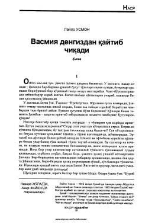

LUDengizchi erkakning muhabbat, yolg'izlik va ichki ziddiyatlar haqidagi qissasi.
Bu qissa arab yozuvchisi Laylo Usmonning asari bo'lib, Nazira Jo'rayeva va Amir Fayzulla tomonidan o'zbek tiliga tarjima qilingan. Asarda dengizchi bir erkakning ichki kechinmalari, dengizga bo'lgan muhabbati va oilaviy hayotidagi ziddiyatlar tasvirlanadi. Qahramonning yolg'izligi, orzulari va his-tuyg'ulari lirik uslubda bayon etilgan.